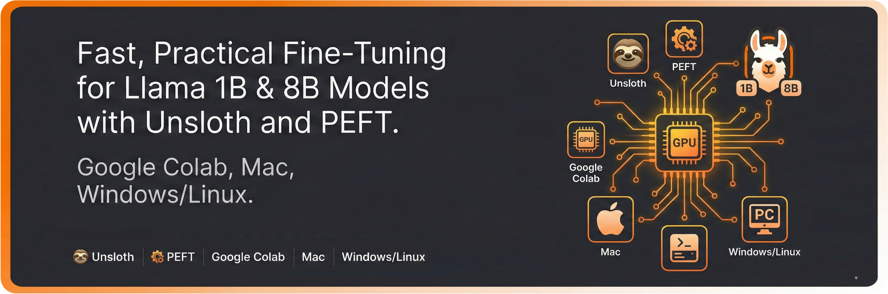

Fine-Tune Small LMs at Lightning Speed
This project is a comprehensive guide to fine-tuning small language models (1B & 8B parameters) using two distinct approaches: fast cloud training with Unsloth on Google Colab, and local adaptation on Mac (MPS) & Windows/Linux (CUDA) using PEFT.

For the complete source code, notebooks for all platforms, and training scripts, check out the project on GitHub → GitHub repository
The project demonstrates how to fine-tune an 8B parameter model in minutes using Unsloth, a library that makes training small LMs incredibly fast and memory-efficient. While traditional fine-tuning of 8B models often requires expensive GPU clusters, Unsloth democratizes this process by enabling training on free Google Colab resources.
For a detailed walkthrough and the accompanying article, visit the Medium post → Medium Article
What you get from this project:
- Three Platform-Specific Workflows: Google Colab (GPU in the cloud), macOS (Apple Silicon/MPS), and Windows/Linux (CUDA).
- Ready-to-Use Dataset: Basketball dataset plus raw corpus for quick experimentation.
- LoRA (Low-Rank Adaptation): Train less than 1% of parameters while achieving comparable performance to full fine-tuning.
- Complete Training Pipeline: From dataset preparation to training to inference.
- Multiple Data Formats: Support for both raw text files and supervised Q&A pairs.
Why Unsloth changes the game:
- Memory Efficiency: Reduces memory usage by up to 80% through optimized kernels and gradient checkpointing.
- Speed: Training is 2-5× faster compared to standard Hugging Face training loops.
- Larger Batch Sizes: Supports larger batches on consumer hardware, enabling faster convergence.
- Accuracy Maintained: Achieves comparable results with fewer computational resources.
The project includes comprehensive notebooks for each platform, all using the same dataset and achieving consistent results. Whether you prefer cloud training with Unsloth or local fine-tuning with PEFT and LoRA, this guide provides everything you need to adapt compact open models like TinyLlama-1.1B and Llama-3.1-8B-Instruct to your own domain.
Training typically completes in under 10 minutes on Google Colab's free T4 GPU—something that traditionally would require hours or expensive cloud instances. This makes advanced LLM customization accessible to everyone, not just those with access to expensive computational resources.
Front page